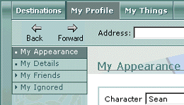
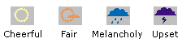

My Appearance
The
My Appearance area provides a way to customize the physical characteristics of your character in the 3-D view. The
My Appearance area is located on the
My Profile menu. when you click
My Profile, the
My Appearance area is open by default. When you change a setting in this area and click
Apply, the change is applied to your character in the 3-D view for other members to see. Changes that are applied in the 3-D view are saved between sessions in Desktop World.

My Appearance options
Character
Provides six different characters to represent yourself in the 3-D view. The default selection for a male is Sean; the default selection for a female is Alice. You select gender in the Log On box.
Mood
Includes four different moods other than None, which is the default. Mood selections are not saved between sessions in
Desktop World.
The moods are:

Item color options
Allows you to change the colors of specific items in your character's appearance. The color of your character's hair, skin, top, bottom, and shoes can all be customized by clicking the specific item in the list and then selecting a color from the color palette. When you select a color, the change is shown in the preview pane next to the color palette, but it is not visible to other members until you click .
Color palette
Provides four presets you can choose from and a color menu if you want to select a custom color.
Revert
Undo the color selection you have just chosen.
Apply
Makes the color changes you have selected visible in the 3-D view to all Desktop
World members.
See also